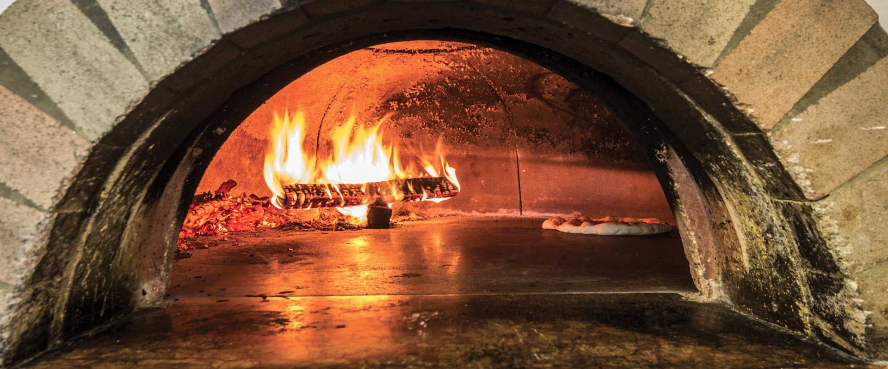
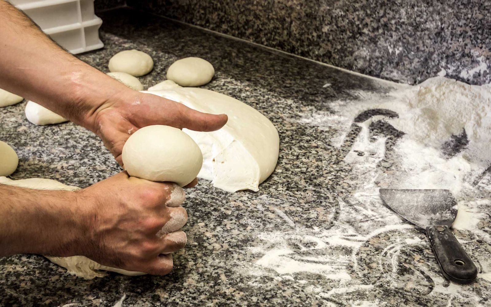
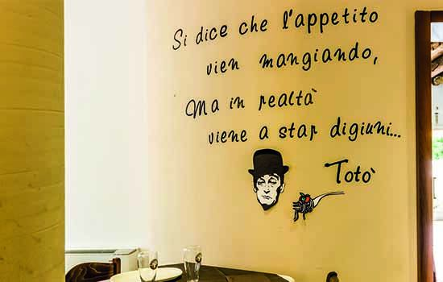
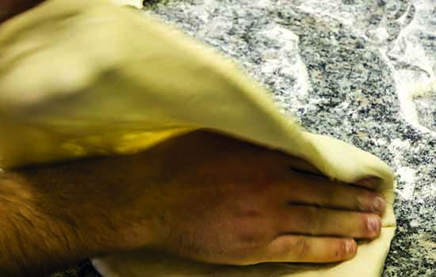
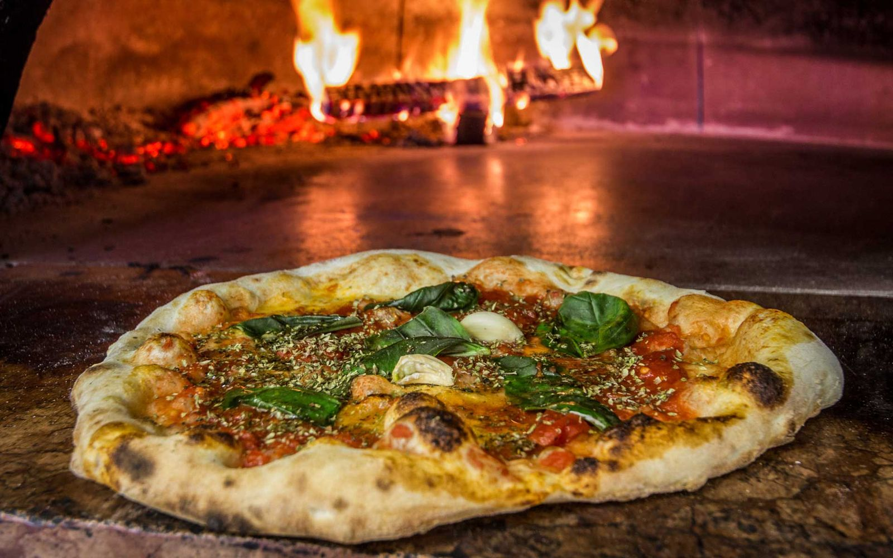
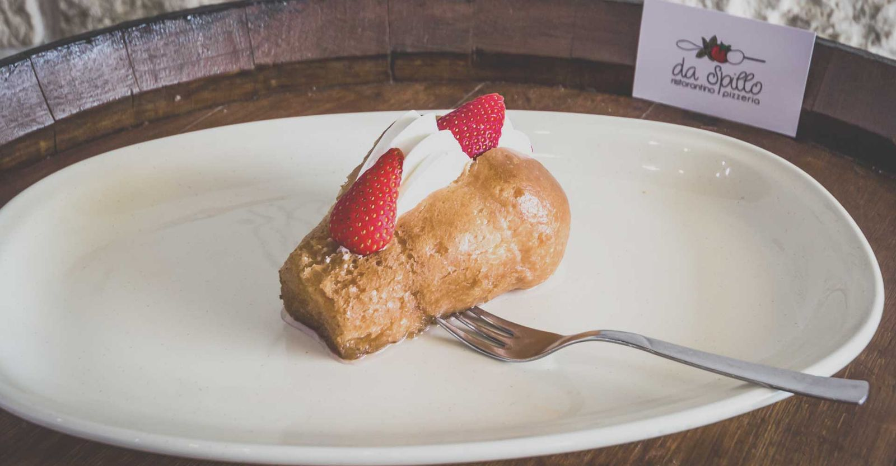
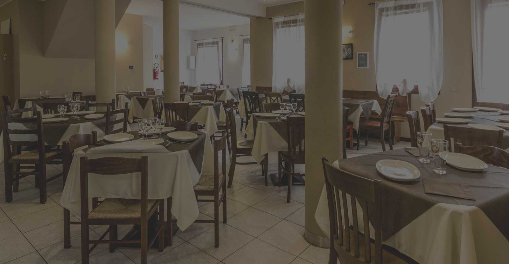

Rodolfo
Margherita con il bordo ripieno di ricotta. L'ha inventata Rodolfo Sorbillo, il papà di Beppe.

L'impasto a lunga lievitazione lo fa Beppe Sorbillo, pizzaiolo di famiglia napoletana dal 1935. Forno a legna, mozzarella DOP e pomodoro da Napoli, in tre pizzerie tra Treviso e Preganziol.
4,5 su Google, 3.940 recensioni
Venerdì, sabato e domenica conviene prenotare. Basta una telefonata.
Santa Maria del Rovere: pizzeria e ristorantino, anche con primi e secondi
Orari di oggi
4,5 2.370 recensioni
0422 304286Nel centro di Treviso: forno a legna, fritti e panozzi
Orari di oggi
4,5 1.213 recensioni
0422 545921In via Gorizia, aperta tutte le sere tranne il martedì
Orari di oggi
4,4 357 recensioni
0422 1781481Giuseppe Sorbillo, per tutti Beppe, è nato a Napoli nel 1968 in una delle famiglie di pizzaioli più antiche della città. A Treviso ha portato la pizza di casa sua: bordi alti, pasta morbida e molto digeribile, ingredienti che arrivano da Napoli.


Lunga lievitazione, farine selezionate e prodotti artigianali. La pasta della pizza la prepara solo Beppe.

A mano, lasciando i bordi alti della pizza napoletana. Viene fuori una pizza morbida, leggera da digerire.

Mozzarella DOP, pomodoro pelato che arriva da Napoli, verdure fresche. Poi la cottura, tra la legna e il fuoco.
Si gonfia nell'olio, esce dorata e si mangia subito. Da Spillo la fanno in sei modi: provare per credere.
Prima della pizza c'è l'antipasto napoletano: arancini di patate e mozzarella in carrozza.
Vedi i prezzi delle pizze fritte
Il tiramisù, perché a Treviso non può mancare. Poi la dolcezza di Napoli: babà, pastiera, cannolo con la ricotta. Tutto artigianale, con ingredienti di qualità.
Su prenotazione anche le torte per compleanni e anniversari.

Viale Felissent 4,5 su 2.370, Borgo Mazzini 4,5 su 1.213, Preganziol 4,4 su 357.
Una certezza a Treviso, la pizza è ottima, straordinaria.
Pizza napoletana autentica. Consigliatissimi i fritti! Complimenti allo staff: giovani e appassionati.
Spillo è Spillo… il nome è proprio una garanzia.
Spillo è una delle migliori pizzerie di Treviso. Ingredienti ottimi e condimento abbondante.
Recensioni pubbliche su Google Maps, ottobre 2026.
Viale G. G. Felissent 18, 31100 Treviso
Orari di oggi
| Lunedì | Chiuso |
|---|---|
| Martedì | 18:30–23:30 |
| Mercoledì | 18:30–23:30 |
| Giovedì | 18:30–23:30 |
| Venerdì | 12–14:30, 18:30–23:30 |
| Sabato | 12–14:30, 18:30–23:30 |
| Domenica | 12–14:30, 18:30–23:30 |
Borgo Giuseppe Mazzini 20, 31100 Treviso
Orari di oggi
| Lunedì | Chiuso |
|---|---|
| Martedì | 18:30–23:30 |
| Mercoledì | 18:30–23:30 |
| Giovedì | 18:30–23:30 |
| Venerdì | 12–14:30, 18:30–23:30 |
| Sabato | 12–14:30, 18:30–23:30 |
| Domenica | 12–14:30, 18:30–23:30 |
Via Gorizia 22, 31022 Preganziol
Orari di oggi
| Lunedì | 18:30–23:00 |
|---|---|
| Martedì | Chiuso |
| Mercoledì | 18:30–23:30 |
| Giovedì | 18:30–23:30 |
| Venerdì | 18:30–23:30 |
| Sabato | 18:30–23:30 |
| Domenica | 18:30–23:30 |
Nei giorni di festa gli orari possono cambiare: le aperture speciali sono sulla scheda Google di ogni pizzeria.
Scegli la pizzeria più vicina e chiama: il tavolo te lo tengono loro.